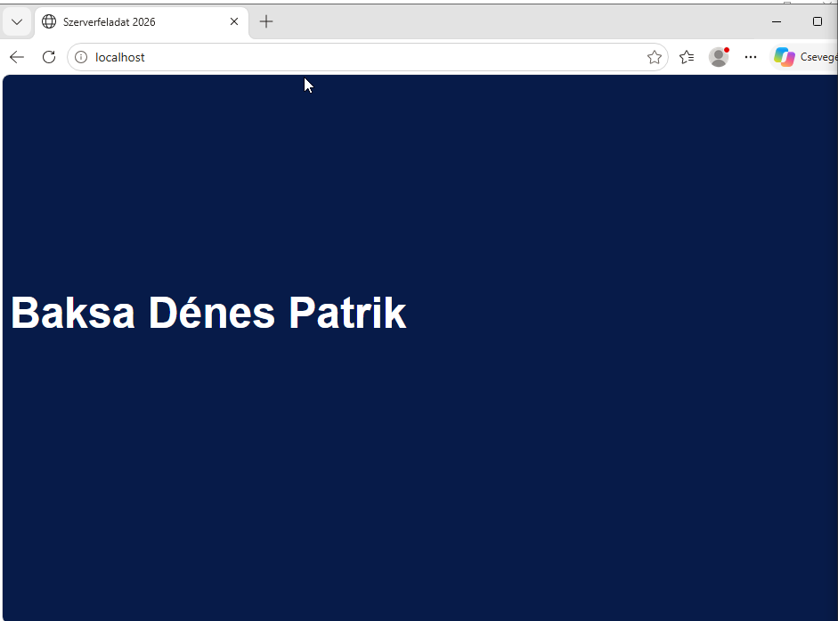
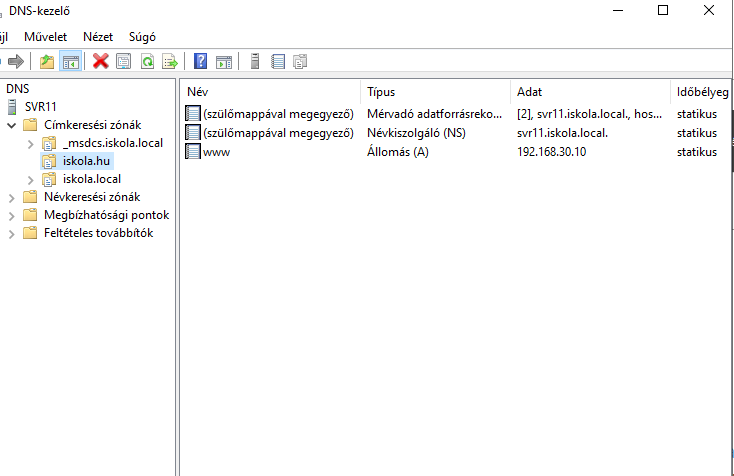
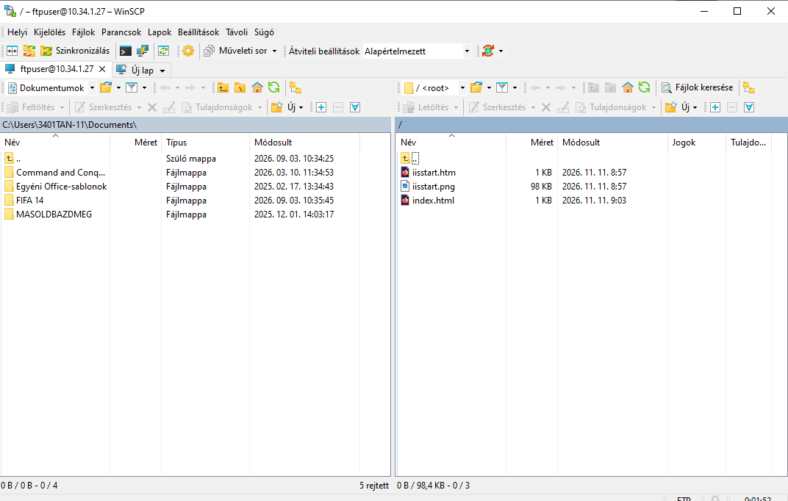

01 · Projektadatok
A feladat célja egy működő web- és FTP-szolgáltatás kialakítása és ellenőrzése.
02 · Hálózati konfiguráció
A virtuális gép belső hálózati adaptere a laborhálózathoz, a második adapter pedig hídkapcsolattal a fizikai hálózathoz csatlakozik.
| Beállítás | Érték |
|---|---|
| Belső hálózati IP-cím | 192.168.30.10/24 |
| Alapértelmezett átjáró | 192.168.30.254 |
| Elsődleges DNS | 127.0.0.1 |
| Hídkapcsolat címe | 10.34.1.27 |
03 · IIS telepítése
Az Internet Information Services (IIS) szerepkör a Kiszolgálókezelő Szerepkörök és szolgáltatások hozzáadása varázslójával került telepítésre. A webkiszolgáló szerepkörhöz szükséges összetevők kiválasztása után a telepítés befejeződött.

04 · Weboldal és DNS
Az IIS-ben létrehozott webhely a böngészőből érhető el. A DNS-kiszolgáló A-rekordja a megadott nevet a szerver belső IP-címére oldja fel.
DNS-rekord
| Név | Típus | Cím |
|---|---|---|
www | A | 192.168.30.10 |



www.iskola.hu cím böngészőből történő megnyitása.05 · FTP-szerver konfigurációja
Az IIS FTP-szolgáltatása lehetővé teszi a fájlok hálózaton keresztüli elérését. A bejelentkezéshez külön tartományi felhasználó készült.
| Beállítás | Érték |
|---|---|
| FTP-kiszolgáló | 10.34.1.27 |
| Port | 21 |
| Felhasználó | ISKOLA\ftpuser |
| Kliensprogram | WinSCP |


06 · Kapcsolat tesztelése
A webes szolgáltatás böngészőből, az FTP-szolgáltatás pedig WinSCP kliensprogrammal ellenőrizhető. A sikeres csatlakozás igazolja, hogy a hálózati elérés, a hitelesítés és a szükséges jogosultságok megfelelően működnek.